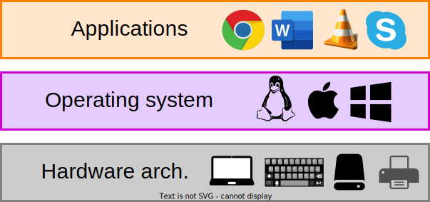
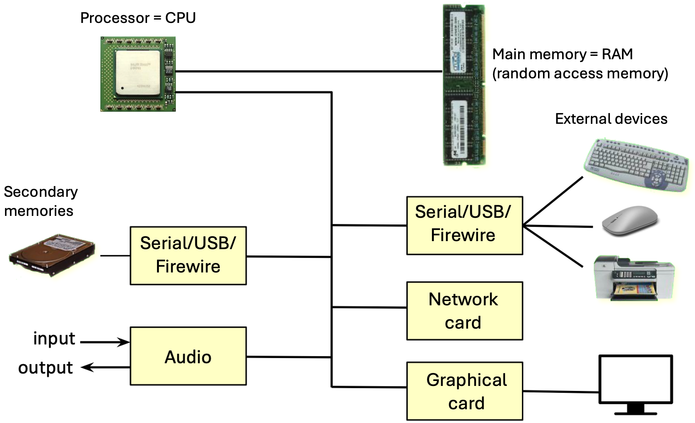
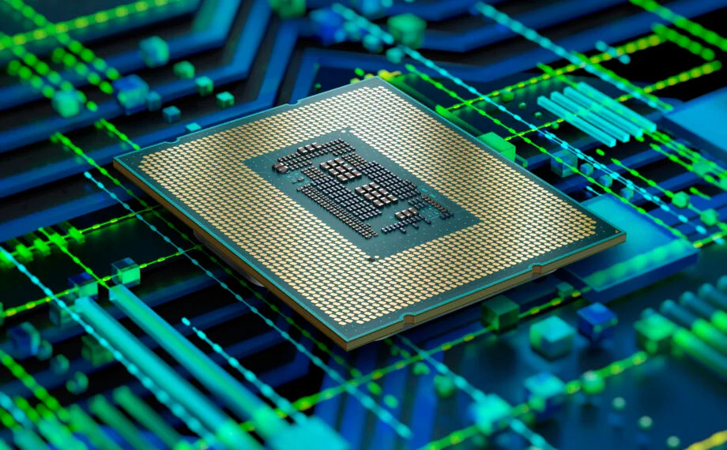
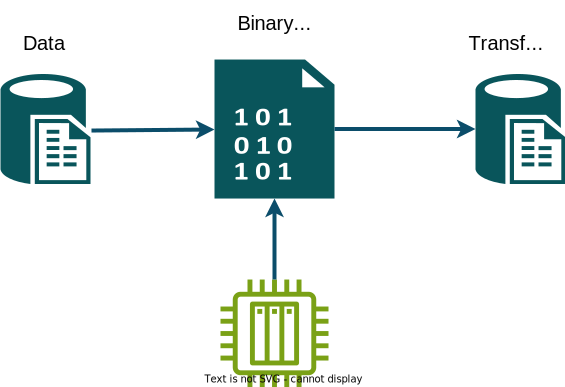
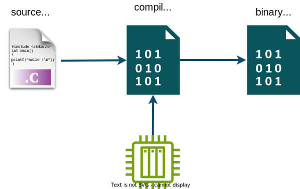
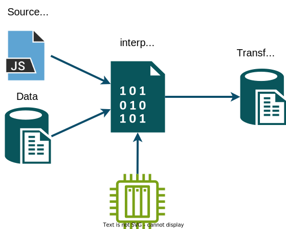

Computer Architecture
and Software Execution Process
Introduction to Computer Architecture
Bachelor in Artificial Intelligence, Data and Management Sciences
CentraleSupelec and ESSEC Business School - 2024/2025
CentraleSupelec and ESSEC Business School - 2024/2025
Idir AIT SADOUNE

-
Associate-Professor at the Computer Science Department
of CentraleSupelec - Paris-Saclay University.- Teacher of Algorithmic and Complexity, Object-Oriented design and programming, Software Engineering, Operating Systems, Modelling and Verification using Formal Methods, etc.
- Engineering program, Bachelor program, ...
-
Researcher at the Model and Proof Teams
of LMF - Formal Methods Laboratory of Paris-Saclay.-
PhD thesis in Computer Science graduated from ENSMA in 2010
about formal modelling and verifying Services compositions. - My research activities address the use of formal methods
for modelling and verifying systems using refinement
and proof-based approaches.
-
PhD thesis in Computer Science graduated from ENSMA in 2010
Learning outcomes and assessment
Main objective $\to$ Demystify the computer and its components.
- Analyze the main components of a computer and their role.
- processor, memory, input/output devices, ...
-
Describe the organization and operation of these entities.
- how a processor, memory or other components work...
-
Understanding Program Execution.
- how does the processor understand and execute a Python program?
Syllabus
| Chapter | Lecture | TD | Lab |
|---|---|---|---|
| Computer Architecture $\to$ Introduction | 1h30 | ||
| Operating systems | 1h30 | ||
| Data representation | 1h30 | 1h30 | |
| Internal Architecture of Microprocessors | 1h30 | 1h30 | 6h00 |
| Memory management | 1h30 | 1h30 |
Assessment of learning outcomes
- The practical exam during the Lab sessions (40%)
- The final exam (60%)
Communication organisation
- Course website $\to$ centralesupelec.edunao.com
- You can ask me your questions before, during and after the sessions.
-
You can contact me outside of the class hours.
- using email $\to$ idir.aitsadoune@centralesupelec.fr
- remotely by $\to$ MS TEAMS
Computer science
- Computer science is the science of automatic information processing.
-
Automatic processing of information is done with programs executed
by machines.- programs (software) describe the process to be executed,
- machines (hardware) run programs.

The concept of computer


The computer is a machine that can be programmed
to execute a sequences
of operations automatically.
- we give him program (software)
- we give him data (information)
- the computer transforms the data by using the program
The concept of computer
- But today a computer does much more than that ...
-
Solve problems following a program.
- Program $\to$ a sequence of instructions describing how the problem is to be solved.
-
Two categories of computers
- personal computer or PC
- embedded system
Computer Architecture ?
- Architecture
- a general term to describe buildings and other physical structures
- the art and science of designing structures
-
Computer
- a machine that can be programmed to execute sequences of operations automatically.
(personal computer (PC), computer on board an airplane, TV, smartphone, ...)
- a machine that can be programmed to execute sequences of operations automatically.
-
Computer Architecture
- a description of the structure of a computer system.
ENIAC - 1945
- was designed in 1945 by
John Mauchley
and John Eckert
at the University of Pennsylvania. - was the first programmable, electronic, general-purpose digital computer.
- was a large, modular computer with individual panels performing different arithmetic functions.

HP 3000 - 1972
-
was designed to be the first minicomputer with full support
for time-sharing. - first implemented with Transistor-transistor logic.
-
integrating integrated circuits
on a large scale led to the development of microprocessors.

Apple II - 1977
- one of the first highly successful mass-produced microcomputer products.
- designed by
Steve Wozniak,
and launched in 1977 by Apple.

Today's computers
- System on a Chip
(SOC) :
a complete system embedded in a chip (integrated circuits). - An integrated circuits can contain:
- one or more microprocessors,
- memory,
- interface devices,
- or any other component


Layered organization
All these systems are built
on a single model
- a hardware architecture
- a set of devices
- an operating system
- a set of applications
Layered organization

A hardware architecture
The computer components

Binary system

-
The processor, memory or any other components
are electronic circuits. -
The processor contains electronic circuits that calculate
one or more logic functions. -
A logic circuit uses two logical values
(bits - Binary digITs).- a signal between 0V and 1V $\to$ bit 0.
- a signal between 2V and 5V $\to$ bit 1.
-
Electronic/Logic circuits manipulate sequences of bits that can correspond
to numeric data or more complex objects.
Binary system
Decimal $\to$ Binary of $100_{10}$
$100 \div 2 = 50$ $\to$ remainder $= 0$
$50 \div 2 = 25$ $\to$ remainder $= 0$
$25 \div 2 = 12$ $\to$ remainder $= 1$
$12 \div 2 = 6$ $\to$ remainder $= 0$
$6 \div 2 = 3$ $\to$ remainder $= 0$
$3 \div 2 = 1$ $\to$ remainder $= 1$
$1 \div 2 = 0$ $\to$ remainder $= 1$
$100_{10} = 1100100_2 =$ 0b$1100100$
$100 \div 2 = 50$ $\to$ remainder $= 0$
$50 \div 2 = 25$ $\to$ remainder $= 0$
$25 \div 2 = 12$ $\to$ remainder $= 1$
$12 \div 2 = 6$ $\to$ remainder $= 0$
$6 \div 2 = 3$ $\to$ remainder $= 0$
$3 \div 2 = 1$ $\to$ remainder $= 1$
$1 \div 2 = 0$ $\to$ remainder $= 1$
Binary $\to$ Decimal of $1100100_2$
$0 \times 2^0 + $
$0 \times 2^1 + $
$1 \times 2^2 + $ ($=4$)
$0 \times 2^3 + $
$0 \times 2^4 + $
$1 \times 2^5 + $ ($=32$)
$1 \times 2^6$ ($=64$)
$1100100_2 = 100_{10}$
$0 \times 2^0 + $
$0 \times 2^1 + $
$1 \times 2^2 + $ ($=4$)
$0 \times 2^3 + $
$0 \times 2^4 + $
$1 \times 2^5 + $ ($=32$)
$1 \times 2^6$ ($=64$)
Useful power of $2$
- 2$^0$ = 1
- 2$^1$ = 2
- 2$^2$ = 4
- 2$^3$ = 8
- 2$^4$ = 16
- 2$^5$ = 32
- 2$^6$ = 64
- 2$^7$ = 128
- 2$^8$ = 256
- 2$^9$ = 512
- 2$^{10}$ = 1024
- ...
Binary system
Exercise
-
Convert these decimal numbers to binary:
- 8, 13, 15, 2025, ...
Hexadecimal System
Base 16 or hex system
-
In computing systems, the binary string equivalents of large
decimal numbers can become quite long.
- ex. $154863_{10} = 100101110011101111_2$
-
The hexadecimal system contains 16 sequential numbers as base units.
- The first nine numbers (0 to 9)
- The next six two-digit numbers (10 to 15) are represented by the letters A, B, C, D, E, F.
-
The format of hex numbers is more compact than binary numbers because
they can represent large binary numbers with fewer digits.
- four digits of a binary number can be represented by a single hex digit
- binary $\Longleftrightarrow$ hexadecimal immediate translation
0000 0001 0010 0011 0100 0101 0110 0111 1000 1001 1010 1011 1100 1101 1110 1111 0 1 2 3 4 5 6 7 8 9 A B C D E F
Hexadecimal System
Base 16 or hex system
-
The format of hex numbers is more compact than binary numbers because
they can represent large binary numbers with fewer digits.
- four digits of a binary number can be represented by a single hex digit
- binary $\Longleftrightarrow$ hexadecimal immediate translation
0000 0001 0010 0011 0100 0101 0110 0111 1000 1001 1010 1011 1100 1101 1110 1111 0 1 2 3 4 5 6 7 8 9 A B C D E F - ex. $154863_{10} = 100101110011101111_2$ $= 10-0101-1100-1110-1111_2$
- ex. $154863_{10} = 100101110011101111_2 = 25CEF_{16} =$ 0x$25CEF =$ $$25CEF$
10 0101 1100 1110 1111 2 5 C E F
Hexadecimal System
Base 16 or hex system
-
Convert these decimal numbers to hexadecimal:
- 8, 13, 15, 2025, ...
Data measurement unit
-
In computer systems, a unit of information is used to describe the capacity
of a digital data storage device. -
A byte is a unit that computers use to represent a character such as a letter, number, or a typographic symbol
(for example, “h”, “7”, or “$”)
- will be discussed later in the 3rd chapter.
-
The byte is a unit of digital information that most commonly consists of 8 bits.
- 1 byte = 8 bits (binary digits)
- Multiples of byte
- 1 Kilobyte (KB) =
2$^{10}$ bytes = 1 024 bytes $\approx$10$^3$ bytes - 1 Megabyte (MB) =
2$^{20}$ bytes = 1 024 KB = 1 048 576 bytes $\approx$10$^6$ bytes - 1 Gigabyte (GB) =
2$^{30}$ bytes = 1 024 MB = 1 073 741 824 bytes $\approx$10$^9$ bytes - 1 Terabyte (TB) =
2$^{40}$ bytes = 1 024 GB = 1 099 511 627 776 bytes $\approx$10$^{12}$ bytes
- 1 Kilobyte (KB) =
The computer components
The computer components
-
What can a computer (processor) do?
- copy values between storage units
- perform logical/arithmetic operations between stored values
- move within the program, possibly conditionally
Machine Language
-
A processor executes a very low level language (Machine Language)
- the instructions of this kind of language execute elementary operations.
- machine instructions control electronic/logic circuits.
-
Machine language coding must be simple to decode and optimized
- each instruction is a sequence of binary numbers (bits).
- this coding is not textual $\to$ it is done at bit level (binary code)
- in practice, we represent these codes in hexadecimal form

Assembly language
-
Unreasonable to want to write/read binary machine language directly. - Definition of an equivalent symbolic representation (Assembly language)
- textual mnemonics for operations/functions
- textual writing of the entire program
- Assembly language
- very close to the machine, very low level
- you need to be well-known in the technical details of the processor.
- Assembler $\to$ translator from assembly language to machine language.
High level programming language
-
Most software is written in a high-level programming language.
- example $\to$ Python, Java, C, C++, ...
-
High-level language $\to$ expressing instructions using words and mathematical symbols.
- Easy to learn.
- does not require knowledge of the machine's processor.
-
High-level programming languages provide abstract concepts that are not present in machine language.
- data types $\to$ integers, reals, strings ...
- control structures $\to$
if ...then ...else ,while ,for , functions.
high-level language vs low-level language
-
The programmer writes a program with high-level language,
and the processor executes a low-level code (binary code). -
How is a program written in a high-level programming language executed?
- a compilation process
- an interpretation process
The compilation process
The compiler is itself a program
Compilation is performed only once
- No more need for source code
- No more need for compiler
- The two most popular compiled languages are C and C++.
- used in creating games, software, artificial intelligence, operating systems, and more.
The interpretation process
- Still need the source code
- Still need the interpreter
- No binary code created
The interpreter is itself a program
- The two most popular compiled languages are Python and Javascript.
- used in web development, data science, machine learning, and more.